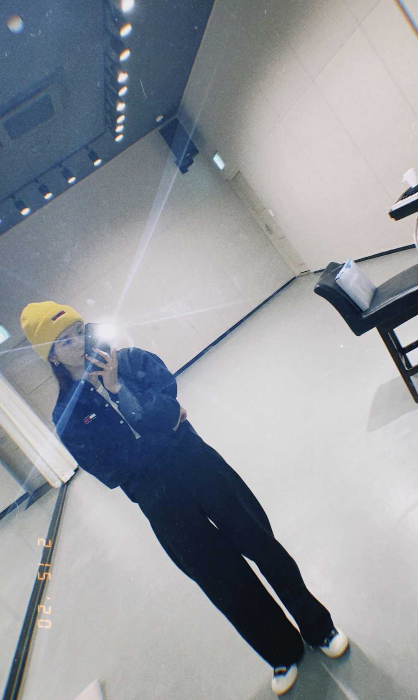
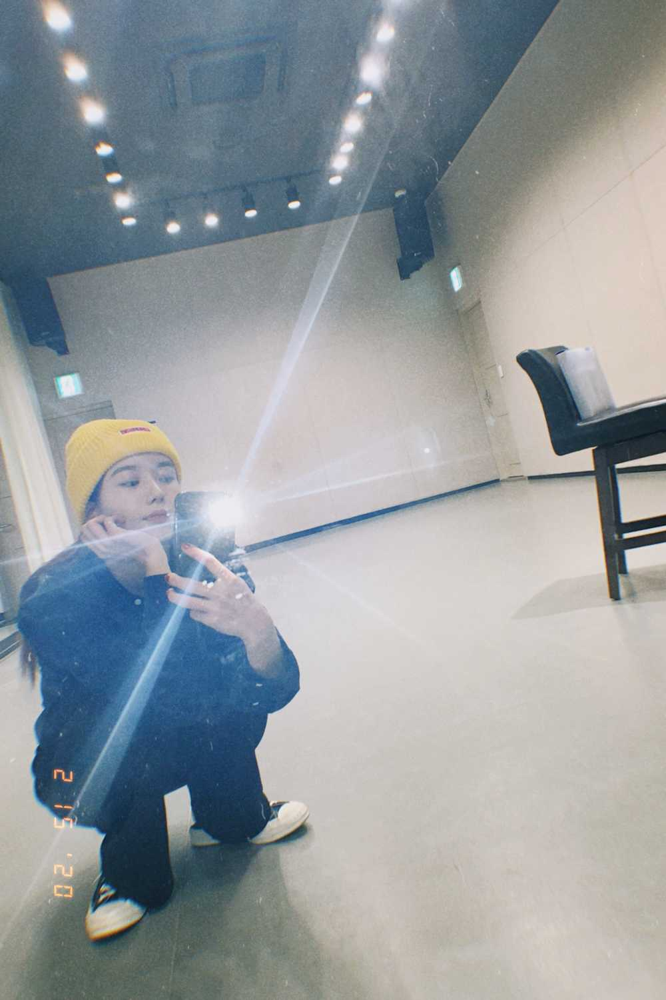

저녁은비 왔드아 ㅋㅋㅋㅋㅋㅋㅋㅋㅋㅋ
아점저 은비 오늘 좀 귀찮게 했는데 괜찮았어 ??
괜찮았음 소리질러 !!!!!!!!!!!!
저녁은 뭐 먹을거야 ? 알려주라 알려쥬 알려줄사람 여기여기 붙어라 !!!!!!!!!! 나 방금 기타 연습 했는데 나중에 보여줄게요 아 그리고 나도 운전면허 땄는데 총 몇번에 걸쳐서 땄을지 궁금하지 ㅎㅎㅎㅎ 상상 그이상인데
아마 들으면 나랑 안놀아줄지도 몰라 흐그그으그으긍흐긍흑흑흑 그럼 저녁은비는 이만 안녕 ! 저녁 맛있게 먹어 나의 사룽둥이 (๑>◡<๑)
ゆうはんはたべましたか。
おいしいゆうはんをたべましょう。
うんてんめんきょをとりました。
(๑>◡<๑)

